Ele carrega o melhor de dois mundos: a precisão cirúrgica e a curiosidade científica do Doutor Estranho, e o domínio absoluto sobre a realidade do Senhor Destino. Nos seus olhos verde-escuro, o próprio tempo se dobra.
"Todos os caminhos se curvam diante do meu olhar."
Registro Visual · Olhos do Destino Ativos
I · Galeria Arcana
Faces do Feiticeiro
Várias aparições de Jack em seus caminhos mais místicos: da medicina ao trono, do mago ao destino.
Supremacia Arcana
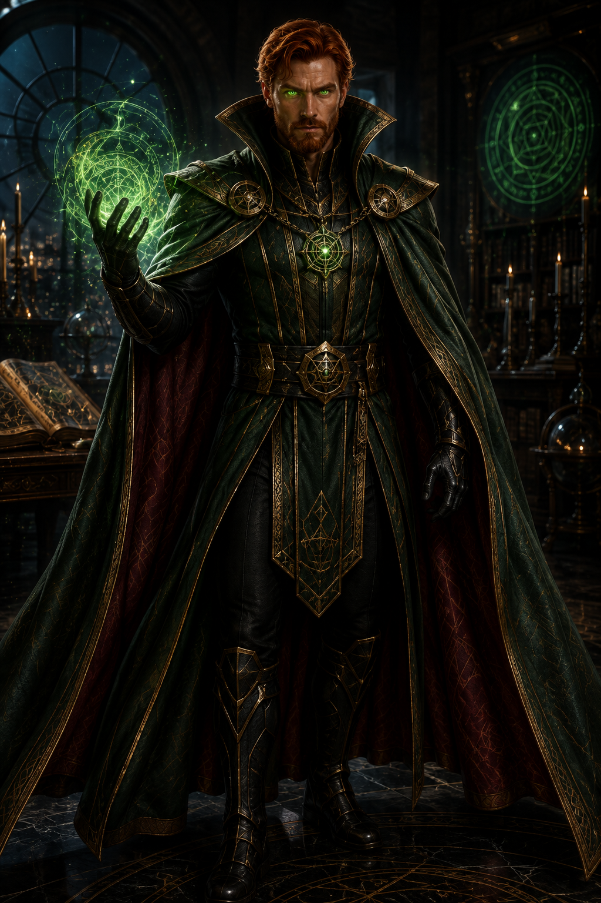
Mago Supremo
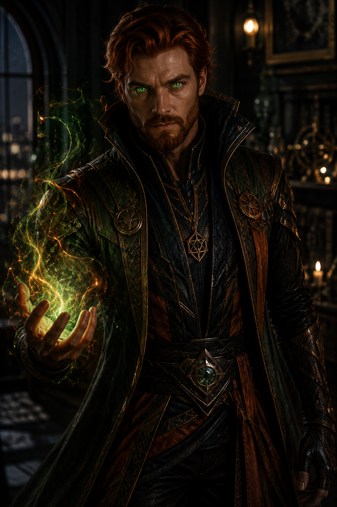
Feiticeiro do Destino
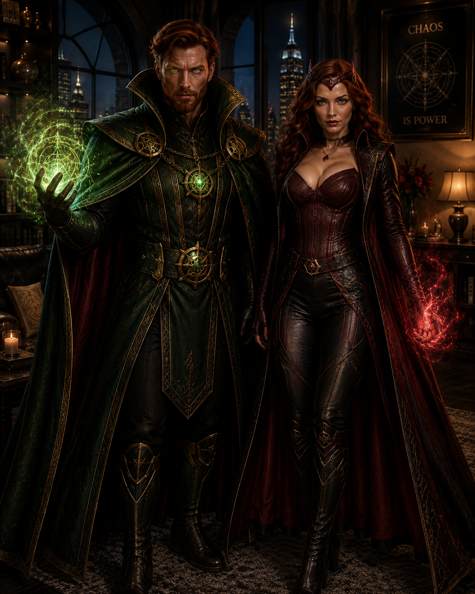
Origem Médica
O artefato despertará ao entrar no campo de visão
I · Dossiê
Origem
Um homem dividido entre duas vocações — e completo em nenhuma delas até unir as duas.
Antes de qualquer feitiço, Jack Connor foi um cirurgião. Suas mãos aprenderam a precisão salvando vidas em uma mesa de cirurgia — o mesmo tipo de precisão que, anos depois, aprenderia a canalizar em runas, barreiras e cortes que rasgam a própria técnica de um inimigo.
Ele não escolheu apenas um caminho místico: herdou o melhor de dois. Do Doutor Supremo, a versatilidade arcana, a projeção astral, o domínio sobre portais e a manipulação da realidade. Do Senhor Destino, a soberba controlada, a armadura de convicção e a certeza fria de que o destino pode — e deve — ser reescrito por quem tem força o suficiente para reescrevê-lo.
O resultado é um feiticeiro supremo que não apenas reage à magia ao seu redor: ele a lê, a desmonta, e devolve nos seus próprios termos. Ao seu lado, a Feiticeira Escarlate — não como aliada ocasional, mas como companheira que compartilha o peso da realidade que ele insiste em moldar.
Classe / PapelFeiticeiro Supremo · Controlador de Campo
DomínioTrono dos Destinos
Feitiço FavoritoManipulação da Realidade
ArmaLâmina Invertida dos Céus
CompanheiraFeiticeira Escarlate
II · Poder Ocular
Os Olhos do Destino
Quando ativados, o verde-escuro dos olhos de Jack se fragmenta em camadas giratórias de runas douradas — engrenagens etéreas onde se veem reflexos de futuros possíveis, como se o próprio tempo se movesse dentro de sua íris.
1. Percepção Causal Absoluta
Jack enxerga o fio do destino de todas as criaturas ao seu redor, prevendo ações, reações e probabilidades com precisão quase perfeita — um poder análogo à premonição.
Mecânica: +3 em testes de percepção e esquiva · 1 re-roll forçado por combate
2. Controle Temporal Parcial
Em sinergia com o Olho de Agamotto, Jack pode pausar, reverter ou acelerar pequenas frações do tempo local: congelar um projétil no ar, reverter um golpe já recebido, ou agir uma vez extra no turno.
Custo: 8 PE por uso
3. Leitura de Realidade / Decodificação
Jack vê a estrutura de feitiços e técnicas inimigas, compreendendo imediatamente seus mecanismos — podendo anular, replicar ou adaptar um feitiço após observá-lo uma única vez.
+2 CD contra controle · +2 na Anulação de Técnica
4. Consciência Multidimensional
Jack enxerga múltiplas realidades simultaneamente, "vendo" versões alternativas de um combate antes que ocorram — o que amplifica sua Manipulação da Realidade com base em probabilidades calculadas em tempo real.
Amplifica: Manipulação da Realidade
Dentro do Trono dos Destinos, os Olhos do Destino atingem seu auge: Jack vê todas as ações possíveis de seus oponentes e escolhe qual linha temporal se torna real. Enquanto ativo, ele não luta reagindo — luta decidindo. Tudo o que o inimigo fizer, ele já viu acontecer, e já planejou a resposta.
"Todos os caminhos se curvam diante do meu olhar."
III · Grimório
Feitiços
O repertório místico de Jack, organizado por grau — do conhecimento fundamental até a manipulação absoluta da realidade.
Grau 0 — Fundamentos
Conhecimento Arcano
Mestre em feitiçaria e estudo de livros e grimórios mágicos.
Feitiços de Ilusão
Criar ilusões para confundir inimigos.
Grau 1
Abertura de Portais
Pode abrir um portal para qualquer lugar que o usuário queira.
Magia Mística
Capaz de conjurar feitiços para atacar, defender, teleportar ou manipular energia.
Clones
Usa a energia amaldiçoada para que as pontas dos dedos armazenem a essência, e com a palma, recria um clone.
Grau 2
Barreiras e Escudos Mágicos
Defesa poderosa contra ataques físicos e mágicos.
Magia Mística (Aprimorada)
Amplamente versátil, podendo criar feitiços para ataque, defesa e manipulação do ambiente.
Grau 3
Curar e Ressuscitar
Capaz de curar ferimentos ou reviver pessoas em certas circunstâncias.
Exorcismo e Controle de Entidades
Pode banir espíritos e controlar forças sobrenaturais.
Grau 4
Teletransporte
Pode se mover instantaneamente entre lugares ou dimensões.
Absorção de Criaturas Místicas
Absorveu demônios, dragões e seres cósmicos, adquirindo seus poderes.
Projeção Astral Superior
Mais forte e duradoura que a projeção astral de um feiticeiro comum.
Escudos e Barreiras Impenetráveis
Mais resistentes do que qualquer defesa convencional.
Grau 5 — Manipulação da Existência
Manipulação de Realidade
Pode alterar a realidade em certa escala usando magia. (Feitiço Favorito de Jack.)
Alteração da Realidade
Capaz de distorcer espaço, matéria e energia em grande escala.
Manipulação Temporal
Reverte ou acelera eventos no tempo, mesmo sem o Olho de Agamotto.
Feitiço de Reversão
Desfaz o efeito de uma ação recente, restaurando o estado anterior de um alvo ou situação.
Nível Supremo — Feitiço Único
Feitiço Exclusivo
Ruptura dos Mil Destinos
Uma habilidade de "Contrafeitiço de Destino": ao invés de romper com força, Jack redireciona a linha do feitiço para outro alvo — uma anulação adaptada.
Nível: Supremo (5)Alcance: 30m (ponto central)Área: esfera de 18mDuração: InstantâneaComponentes: Somático + Verbal + FocoCusto: 9 PE
Jack concentra sua energia amaldiçoada em um único ponto, onde o tecido da realidade se parte em mil linhas de destino divergentes. As linhas colapsam sobre si mesmas, causando uma implosão seguida de uma onda de choque destrutiva.
Efeito
Dano base: 12d12 (força do destino) — tratado como dano absoluto, ignora resistências comuns.
Área: todos os alvos na esfera sofrem o dano (resistência para metade).
CD de Resistência: 8 + modificador de habilidade mágica + bônus de proficiência.
Efeitos Secundários
Colapso Temporal: quem falhar no teste fica Atordoado até o início do próximo turno.
Ruptura Espiritual: se o alvo é derrotado, sua alma se fragmenta — impossibilitando ressurreição comum.
Repercussão
Após lançar, teste de Constituição (CD 15). Se falhar: 1 nível de exaustão + 3d8 de dano interno.
Versão Favorita (Aprimorada)
Quando designada como Feitiço Favorito, a Ruptura é ampliada pela habilidade Inata de Jack. As linhas de destino se entrelaçam, criando um nó cósmico de destruição que rasga matéria, tempo e energia.
Dano base: 15d12 + 20 (dano fixo adicional).
Crítico de Realidade: falha por 5+ no teste = desintegração total (nenhum corpo resta).
Área: terreno fica arrasado e instável — 2d6 de dano adicional por turno a quem atravessar.
CD de Resistência: 8 + Mod. Habilidade Mágica + Bônus de Proficiência + 2 (bônus de favorito).
Colapso Temporal Potencializado: alvos que falham ficam Atordoados e Vulneráveis a todo dano até seu próximo turno. Ruptura Espiritual Absoluta: nem magia divina suprema restaura os derrotados — apenas poderes cósmicos.
Custo: 12 PE · Repercussão: Constituição CD 18, falha = 2 níveis de exaustão + 5d8 de dano interno.
IV · Progressão
Habilidades por Nível
Conforme Jack avança em domínio, sua maestria arcana se expande em camadas — da precisão dos feitiços até a fusão entre esgrima e feitiçaria.
Nível 2
Abastecido pelo Sangue
Fundamento inicial da progressão de Jack como Especialista em Técnicas.
Nível 4
Feitiço Favorito
Um dos feitiços de Jack é levado a um nível superior de maneira natural. Ao escolher, o feitiço recebe uma Melhoria de Ritual permanente e imutável, contabilizada como efeito já aplicado ao realizar um ritual.
Feitiços Refinados
Seus feitiços são refinados pelo controle de energia de Jack, tornando-se mais difíceis de resistir. Ele soma metade do bônus de treinamento no cálculo de CD de Feitiços e Aptidões Amaldiçoadas.
Energia Inacabável
O máximo de energia amaldiçoada de Jack aumenta em um valor igual a metade do seu nível de Especialista em Técnicas.
Nível 6
Incapaz de Falhar
Ao realizar uma rolagem de aptidão amaldiçoada (exceto Aptidões de Domínio), Jack pode gastar 2 pontos de energia amaldiçoada para somar seu modificador de Inteligência ou Sabedoria ao resultado — uma vez por aptidão usada na rodada.
Nível Perfeito
Jack escolhe um nível de feitiço para aprimorar: todos os feitiços daquele nível têm CD de resistência aumentada em 2. Nos níveis 12 e 18, pode escolher outro nível de feitiço para o mesmo bônus.
Nível 8
Expansão dos Fundamentos
Jack aprende uma Mudança de Fundamento adicional. No nível 12, aprende mais uma.
Mira Aperfeiçoada
Pode utilizar Mirar em jogadas de ataque amaldiçoado e recebe a Mudança de Fundamento Técnica Precisa (ou, se já possuir, seu bônus aumenta em +1).
Pré-requisito: Olhar Preciso
Liberações Expandidas
Jack recebe uma Liberação Máxima adicional. Nos níveis 12 e 16, recebe mais uma.
Feitiço Preciso
Ao usar um feitiço com teste de ataque, Jack pode gastar 1 PE para +2 de acerto, ou 2 PE para +4 de acerto.
Nível 12
Destruição Focada
Ao invés de espalhar a destruição, Jack a foca em um único ponto ou criatura. Feitiços de dano de alvo único ignoram RD igual ao modificador de Inteligência ou Sabedoria, e têm o dano aumentado em dados iguais a metade do bônus de treinamento.
Esgrimista Jujutsu
Mesclando combate e feitiçaria ao máximo, Jack se torna digno de ser visto como um esgrimista jujutsu. Ao utilizar Combate Amaldiçoado, também pode usar um Feitiço Auxiliar tendo a si mesmo como alvo, desde que o custo padrão seja uma Ação Bônus.
Pré-requisito: Combate Amaldiçoado
Talento
Afinidade com Técnica
Com uma afinidade superior à sua técnica amaldiçoada, Jack desenvolve mais extensões dela. Recebe um Feitiço adicional — e mais um nos níveis 5, 10, 15 e 20.
V · Armamento
Lâmina Invertida dos Céus
Uma katana que não apenas corta carne — corta técnica, maldição e destino. Cada golpe carrega um feitiço próprio, exclusivo da lâmina.
1. Golpe do Nada
Grau 2Custo: 6 PECD: 18
Um corte simples com a katana que anula qualquer efeito ativo (buff, barreira, maldição ou técnica) no alvo atingido. Causa 2d8 de dano cortante + 2d6 de dano puro (ignora resistências mágicas).
"Você desfere um corte que rasga a técnica junto ao corpo do inimigo."
2. Corte do Destino
Grau 3Custo: 9 PECD: 20
Ao acertar, Jack pode selar temporariamente a técnica amaldiçoada principal do alvo — que não pode usá-la por 1d3 rodadas. Causa 3d8 de dano cortante.
"O corte sela o destino amaldiçoado do inimigo, bloqueando sua arma secreta."
3. Ruptura das Maldições
Grau 4Custo: 12 PECD: 21
Libera a energia da Lâmina em uma onda de 6m em cone. Todos os alvos na área sofrem 3d10 de dano cósmico e perdem qualquer buff ou técnica ativa imediatamente.
"Um único corte cria uma onda que destrói maldições como vidro se partindo."
4. Corte Além da Realidade
Grau 5Custo: 16 PECD: 22
Um corte que se projeta pelo espaço e atravessa barreiras, atingindo até 3 inimigos em linha de 12m. Cada um sofre 4d10 de dano cortante + anulação automática da técnica ativa mais forte que possui.
"Um golpe que ignora as leis do espaço, acertando múltiplos inimigos ao mesmo tempo."
5. Julgamento do Vazio — Feitiço Único da Katana
Grau 6Custo: 20 PECD: 24
Jack concentra toda a energia da Lâmina Invertida e de sua magia em um único corte: área esférica de 9m (igual a uma expansão completa). Todos os inimigos na área sofrem 6d10 de dano puro (ignora defesa e resistência), e todas as técnicas, buffs e barreiras dentro são imediatamente anuladas. Alvos que falharem no teste ficam incapazes de usar técnicas amaldiçoadas por 1 rodada.
"O corte absoluto — o vazio consome a energia amaldiçoada, deixando apenas silêncio e dor."
Dicas de Uso Estratégico
Golpe do Nada — o anti-feitiço básico: sempre útil contra maldições menores ou buffs incômodos.
Corte do Destino — perfeito contra chefes que dependem de uma única técnica: selar a "técnica principal" por 1–3 rodadas é decisivo.
Ruptura das Maldições — limpa grupos de inimigos buffados ou quebra expansões sem gastar a própria expansão de Jack.
Corte Além da Realidade — combinação perfeita com os portais de Jack: abrir um portal para cortar inimigos alinhados atrás de barreiras.
Julgamento do Vazio — o encerramento absoluto de um combate de alto nível.
VI · Progressão de Poder
Caminho do Poder
A jornada de Jack, do mago versátil ao Feiticeiro Supremo do Destino, praticamente invencível dentro do seu próprio domínio.
Aura Elemental + Absorção Elemental — já começa a armazenar elementos e devolvê-los.
Estratégia
Defesa + confusão: abre portais, usa ilusões, controla o campo com barreiras.
Especial
Escolhe um Feitiço Favorito — recomendado Abertura de Portais ou Magia Mística.
Níveis 5–8
O Arquiteto das Barreiras
Feitiços
Cura e Ressurreição, Exorcismo e Controle, Escudos/Barreiras impenetráveis.
Habilidades
Energia Inacabável, Incapaz de Falhar, Nível Perfeito (+2 CD em Exorcismo e Cura).
Aptidões
Técnicas de Barreira + Paredes Resistentes.
Domínio
Expansão de Domínio Incompleta — primeira manifestação do Trono dos Destinos.
Estratégia
Torna-se o protetor do grupo: prende inimigos em paredes, anula técnicas e salva aliados com cura.
Níveis 9–12
O Guardião do Destino
Feitiços
Teletransporte, Absorção de Criaturas Místicas, Projeção Astral Superior.
Habilidades
Expansão dos Fundamentos, Mira Aperfeiçoada, Liberações Expandidas.
Aptidões
Expansão de Domínio Completa — o Trono dos Destinos prende os inimigos; Anular Técnica.
Estratégia
Usa teleporte + barreiras para controlar o mapa; dentro do domínio, manipula realidade e tempo — início de efeitos "deus ex machina".
Níveis 13–16
O Supremo Feiticeiro
Feitiços
Manipulação de Realidade, Alteração da Realidade, Manipulação Temporal.
Habilidades
Nível Perfeito II (+2 CD em feitiços de nível 4); duas armas definitivas — recomendado Manipulação Temporal e Realidade.
Aptidões
Barreiras quase impenetráveis; combina aura elemental com paredes — flamejantes, elétricas, de gelo.
Estratégia
A Expansão de Jack se torna praticamente impossível de vencer: distorce o tempo para dar mais turnos ao grupo ou reverter erros.
Níveis 17–20
O Senhor dos Destinos
Feitiços definitivos
Manipulação Temporal (grau 5) — controla turnos, acelera envelhecimento, paralisa inimigos. Alteração da Realidade (grau 5) — molda o cenário, muda leis físicas.
Habilidades
Nível Perfeito III (+2 CD em feitiços de nível 5); Afinidade com Técnica extra.
Domínio
O Trono dos Destinos se torna absoluto: qualquer feitiço de Jack tem efeito garantido, a menos que o inimigo tenha poder equivalente. Reset temporal 1x por combate, sem custo de PE.
Estratégia final
Jack é o anti-boss definitivo. Seus aliados lutam dentro da sua proteção; inimigos não escapam da prisão dimensional. Ele decide quando e como a luta termina.
Combos Fortes
Sinergias de Combate
Barreira + Ilusão
Ergue paredes para limitar a visão e, dentro delas, cria ilusões para confundir — parece haver mais saídas ou clones.
Aura Elemental + Absorção Elemental
Absorve dano elemental e o devolve com Magia Mística ou Portais.
Teleporte + Clones
Mobilidade absurda, ideal para combate em equipe.
Manipulação Temporal na Expansão
Praticamente "regrava" a luta.
Exorcismo + Anular Técnica
Inimigos que dependem de técnicas amaldiçoadas sofrem muito contra Jack.
Suporte de Controle
Protege aliados com barreiras e escudos.
Burst de Realidade
Para finalizar, ativa Manipulação de Realidade ou Expansão.
Anti-Domínio
Perfeito para "counterar" expansões inimigas com Anular Técnica.
VII · Dossiê Estratégico
Protocolo Connor
Um plano de combate desenvolvido especificamente contra adversários que operam pelo arquétipo do Orgulho.
Estratégia contra o Orgulho
Protocolo Connor · Anti-Pride
01
Quebrar a autoconfiança dele
Orgulho depende de ser "supremo". Jack usa a Manipulação da Realidade para reverter o espelho da soberba: cada feitiço ou habilidade do inimigo se volta contra si mesmo — enfraquecendo sua sensação de invencibilidade.
02
Expansão de Domínio — Trono dos Destinos
Dentro do domínio, Jack tem Controle Absoluto. Ele pode reverter ações para negar cada golpe de Orgulho, como se nunca tivesse acontecido — combinando isso com a Prisão Dimensional para restringir os movimentos e forçá-lo a lutar sob as regras de Jack.
03
Combos específicos contra Orgulho
Barreira Arcana Suprema + runas de absorção → qualquer feitiço de Orgulho se dissolve dentro da barreira.
Manipulação da Realidade (favorito) → distorce as leis, definindo que "Orgulho não pode estar acima de Connor neste espaço".
Lâmina Invertida dos Céus → golpe que ignora a expansão de domínio e corta até a alma das técnicas.
Finalizador — Cadeia de Espelhos → obriga Orgulho a se enfrentar infinitamente dentro do reflexo das próprias habilidades.
⚔
Combo Ofensivo — Corte da Eternidade
Aura de Raio + Fogo + Sombra: Jack comprime toda a energia em um único corte inevitável (potencializado pelo talento Ataque Infalível). A Manipulação da Realidade força a jogada a ser um acerto crítico — atingindo Orgulho independente de defesa ou resistência.
🛡
Combo Defensivo — Eclipse Arcano
Aura de Luz + Sombra simultaneamente: Jack cria um eclipse dentro da barreira. Toda habilidade de Orgulho dentro dessa área causa metade do dano e gasta o dobro de energia.
04
Fraqueza do Orgulho
Quanto mais poder ele concentra, mais vulnerável fica a redirecionamento. Se Jack usar Clones Ilusórios + Manipulação da Realidade, pode fazer Orgulho atacar a si mesmo.
A ordem cede ao caos
VIII · Companheira
A Feiticeira Escarlate
Onde o Trono dos Destinos termina, o Caos começa — e é ela quem completa Jack.
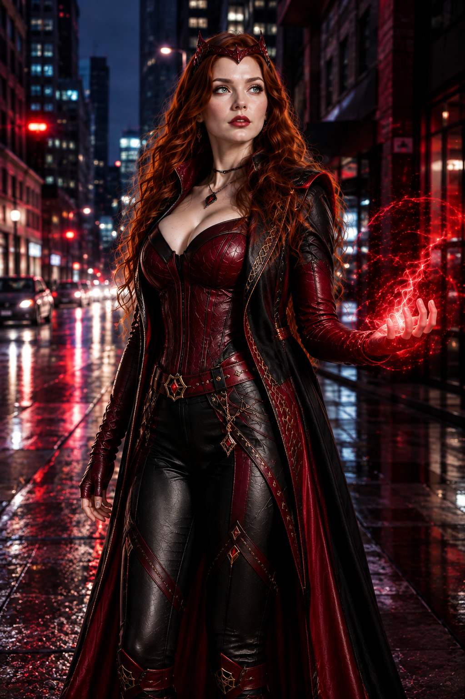
Registro Visual · Arquivo do Caos
Vermelho contra Verde-esmeralda
Alice Maximoff foi uma das poucas pessoas que atravessou o caminho de Jack antes de ele se tornar o Feiticeiro Supremo do Destino. Eles estudaram juntos na Escola das Artes Místicas, onde ambos foram despertados para poderes além do comum — e onde Jack encontrou, em Alice, a única alma capaz de desafiar sua lógica com uma força que parecia nascer do próprio caos.
Ela não era apenas uma estudante brilhante, nem uma simples companheira de treino. Alice carregava um dom raro: a capacidade de manipular o tecido da realidade através da magia do caos, transformando vontade, emoção e energia em força bruta e beleza destrutiva. Seus feitiços não obedeciam à mesma estrutura dos de Jack; eles surgiam como tempestades, como uma linguagem antiga que respondia ao impulso e à intenção.
O vínculo entre os dois começou como afinidade, tornou-se amizade e, por um tempo, quase se transformou em algo mais profundo. Mas a vida exigiu um preço: sua mestra, a figura que guiava sua formação, precisou se mudar de cidade, e Alice foi obrigada a acompanhá-la. Essa separação marcou a primeira grande ruptura em sua trajetória, e também o início de uma jornada solitária, onde ela aprendeu a confiar cada vez mais em sua própria magia.
Na prática, Alice era a contraparte viva de Jack: enquanto ele dominava o cálculo, a precisão e o controle, ela representava a explosão, a vontade irrestrita e a capacidade de reescrever o impossível. Entre os dois, o conflito e a complementaridade se tornaram inseparáveis — e foi justamente essa dualidade que fez deles dois dos maiores feiticeiros do mundo, capazes de superar qualquer adversário que se aproximasse do auge do poder.
REGISTRO ARCANO: Alice Maximoff foi treinada ao lado de Jack, desenvolveu sua própria linhagem de magia do caos e tornou-se uma das figuras mais poderosas da história mística. Sua essência é o equilíbrio entre destruição e criação — um ser capaz de transformar o caos em realidade.
✦ ᚱ ◇ ᛟ ✧ ᚨ ◇ ᛞ ✦
Visão Clássica
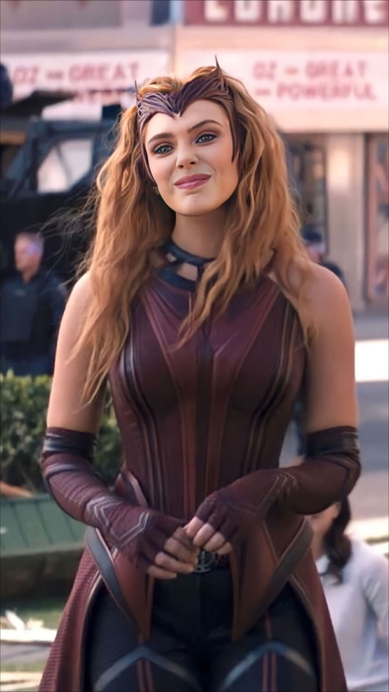
Presença Arcana
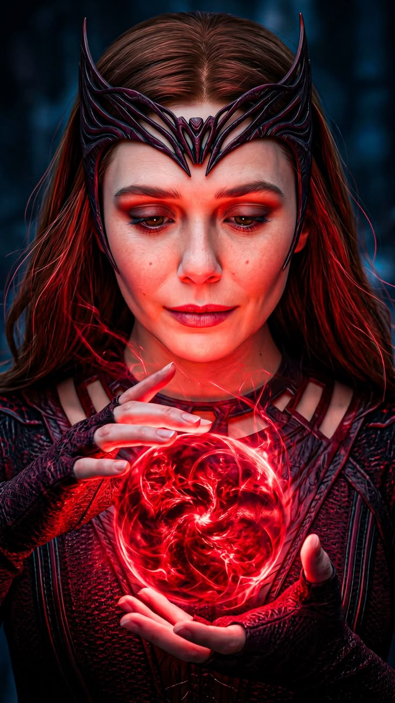
Caos EscarlateVariação Etérea
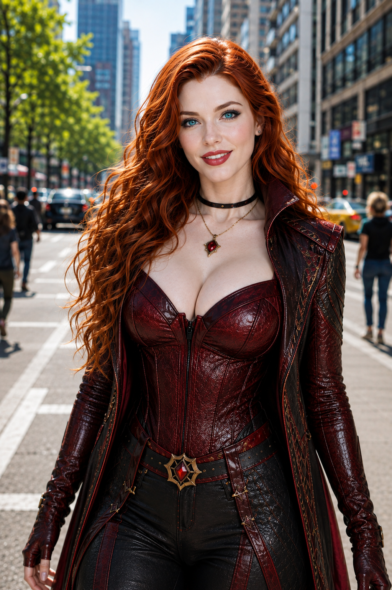
Herdeira do Caos
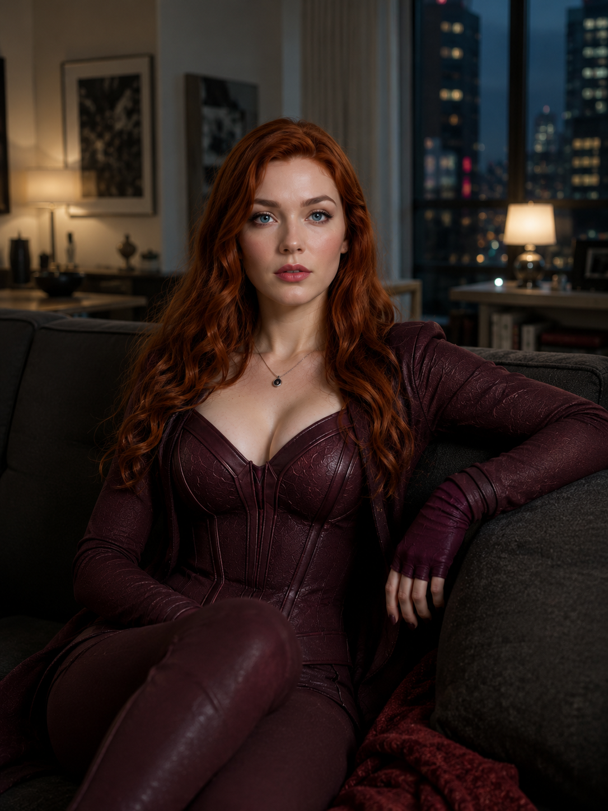
Manifestação Escarlate
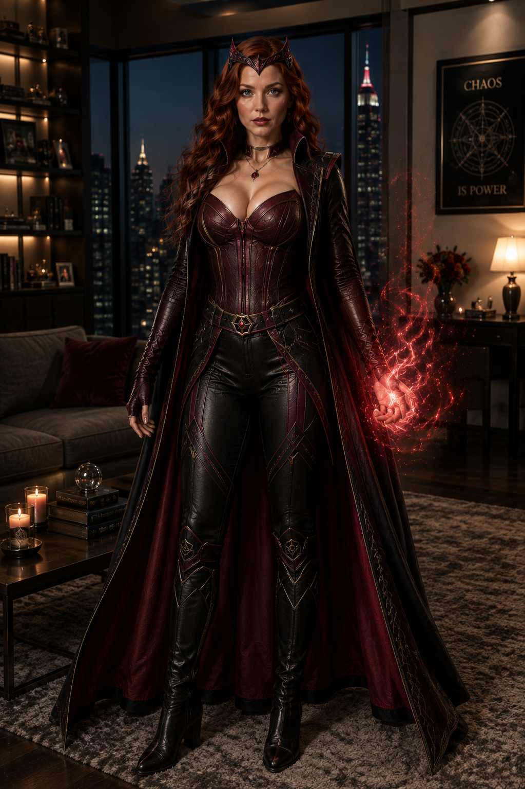
Energia do CaosRealidade DesejadaLar entre Realidades
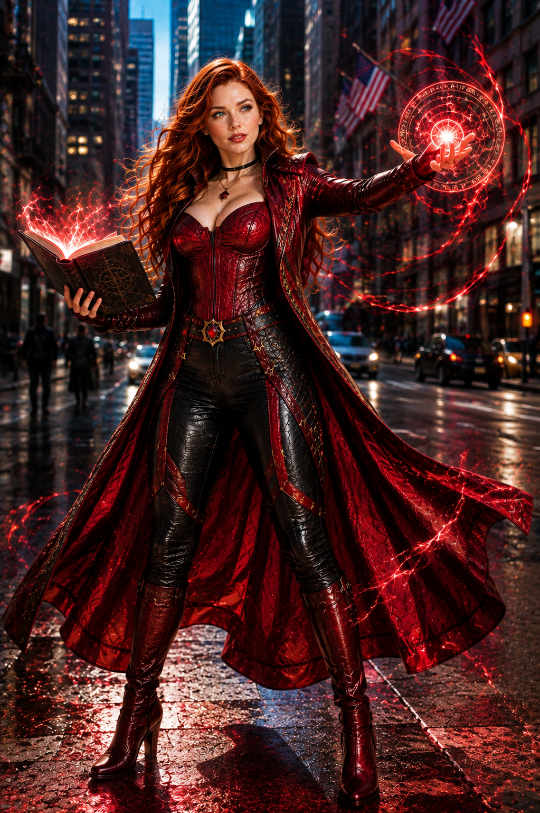
Corrente Escarlate
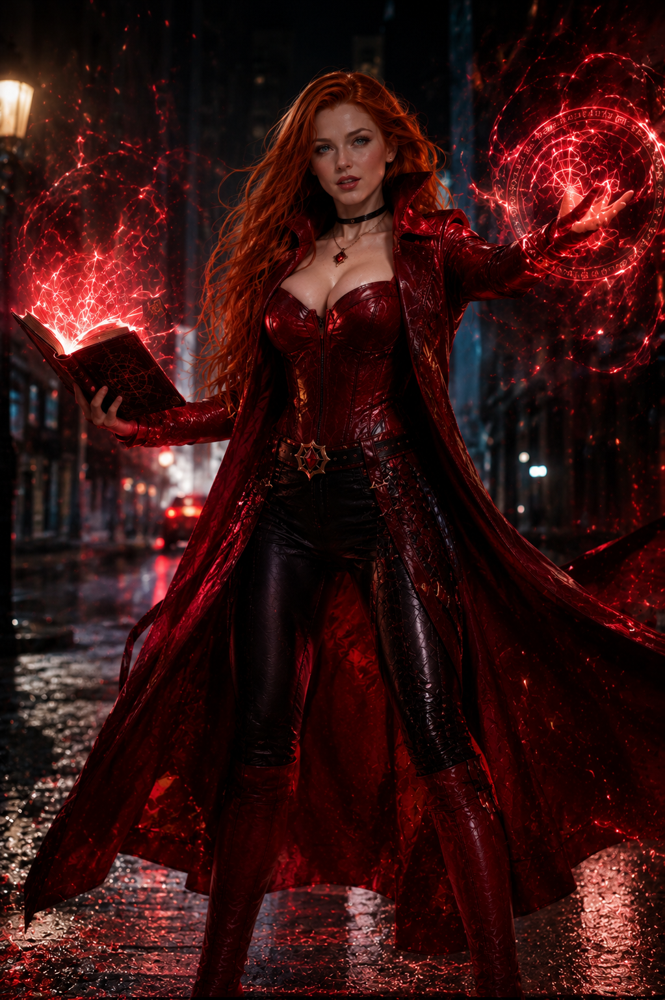
Expansão do Hex
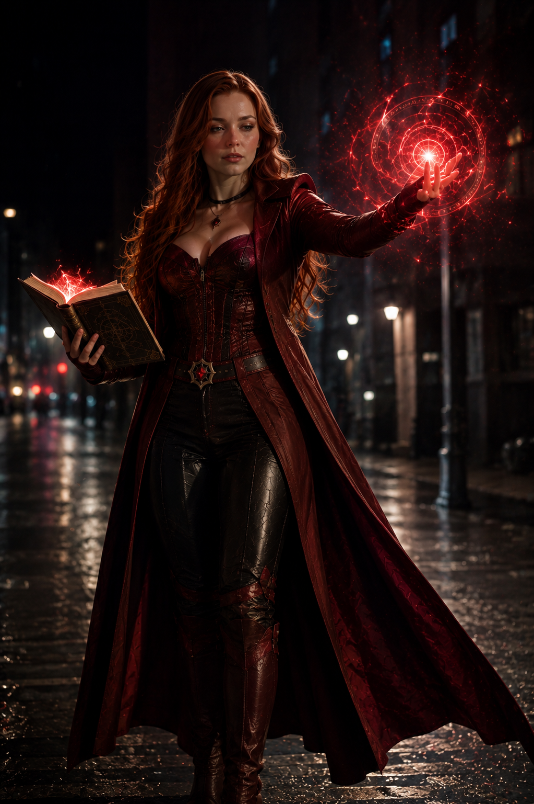
Feitiço de Alice
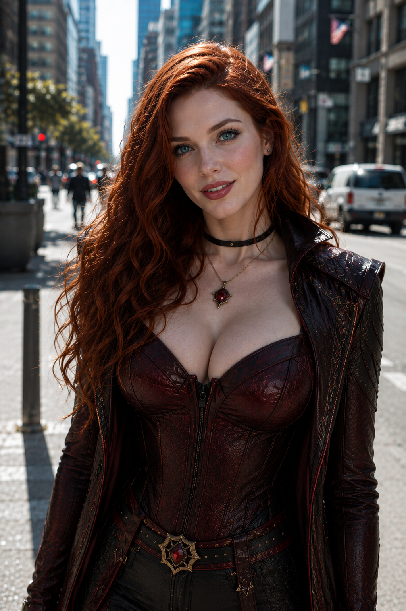
Sangue Maximoff
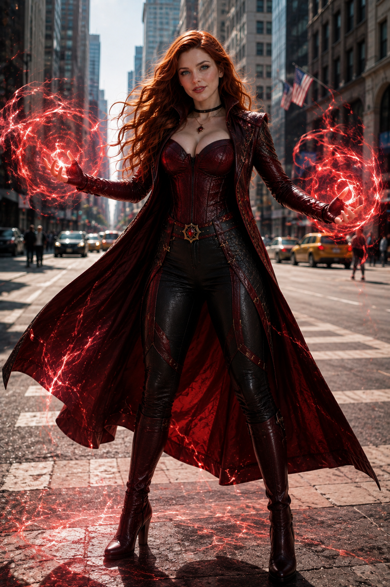
Ascensão Maximoff
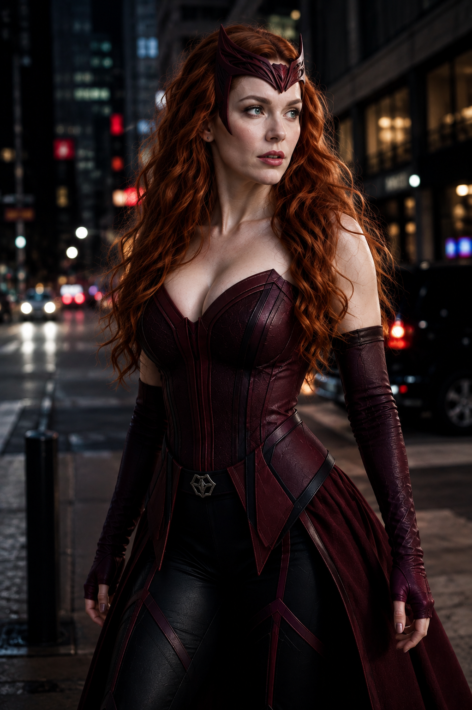
Vontade Absoluta
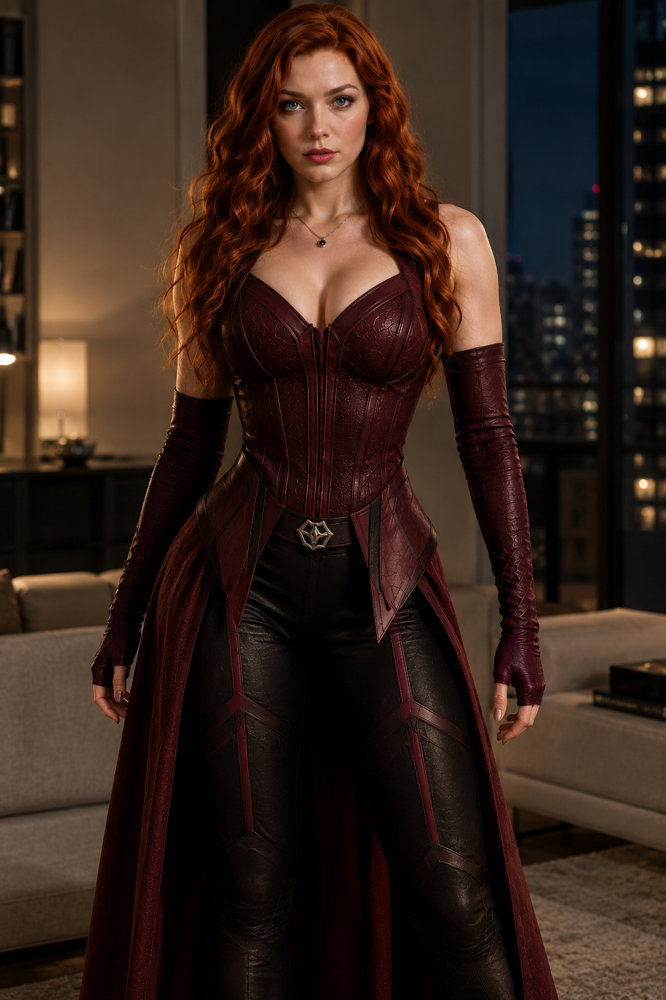
A Feiticeira
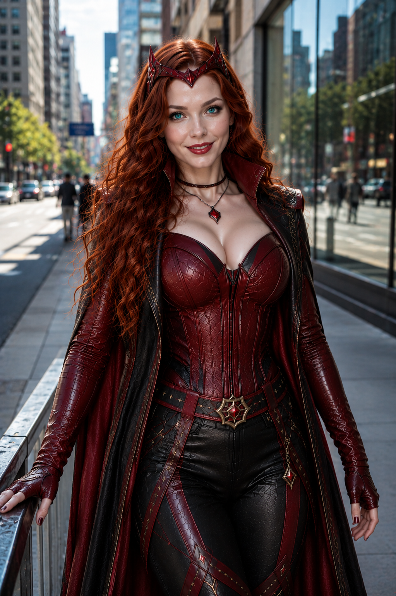
Coroa do Caos
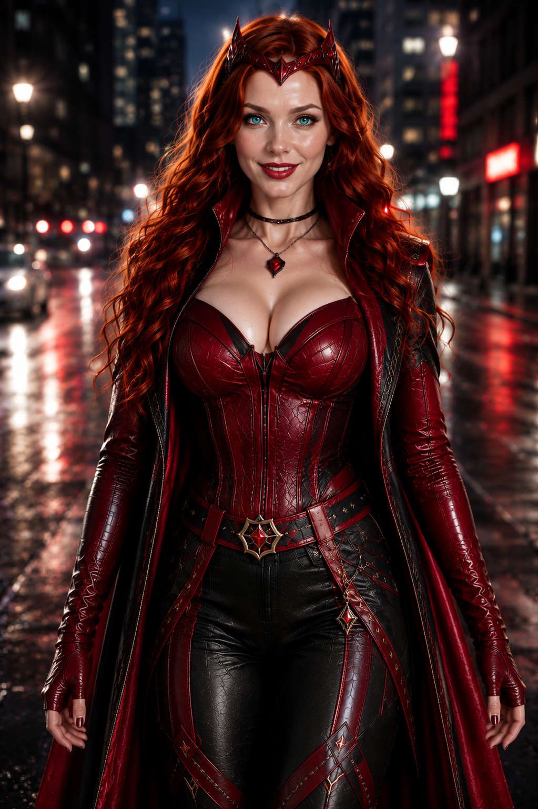
Ícone Escarlate
Toque no grimório para iniciar a conjuração
IX · Dossiê Arcano
Habilidades da Feiticeira Escarlate
Alice Maximoff não é apenas uma conjuradora poderosa. Ela é uma força viva de caos, capaz de reescrever o campo de batalha com magia imprevisível e devastadora.
Nível Inicial
O Despertar do Caos
Feitiços
Manipulação de energia, projeção de escudo, explosões de mana, teleporte curto.
Talento
Instinto Arcano — reação rápida e improviso mágico.
Aptidões
Forma de proteção, manipulação de campos de força, resistência ao impacto místico.
Estratégia
Ataca com instabilidade controlada e cria brechas para o grupo.
Nível Intermediário
O Vórtice da Realidade
Feitiços
Criação de redemoinhos de caos, barreiras de energia, feitiços de desordem e reconfiguração do campo.
Habilidades
Reversão de energia, amplificação do dano, manipulação da gravidade de curto alcance.
Aptidões
Conjuração explosiva, explosões de choque, alteração de trajetórias físicas.
Estratégia
Desorienta o inimigo e transforma o espaço em um ambiente hostil.
Nível Superior
A Magia do Caos Absoluto
Feitiços
Manipulação da realidade por vontade, criação de ilusões ofensivas, distorção do espaço, rajadas de caos.
Habilidades
Ruptura de barreiras, anulação temporária de feitiços, explosões de energia de curto alcance.
Aptidões
Domínio sobre o caos, energia reativa, defesa de emergência e reconfiguração instantânea.
Estratégia
Ela não luta como quem segue regras; ela luta como quem reescreve o próprio combate.
Caos + Escudo
Cria um campo de proteção que reage ao ataque, devolvendo impacto em forma de explosão arcana.
Redemoinho + Ilusão
Gera confusão visual e desloca a percepção do inimigo, abrindo espaço para um golpe devastador.
Energia + Teleporte
Permite que ela se desloque rapidamente enquanto arremessa feitiços em sequência.
Magia do Caos + Ruptura
Rompe defesas e desestabiliza o cenário, tornando a luta imprevisível.
Destrução Rápida
Ataca com explosões de energia e pressão mística.
Controle de Campo
Manipula a área de combate com caos e instabilidade.
Contraponto de Jack
Enquanto Jack controla, ela redefine — e essa diferença faz dela uma peça única.